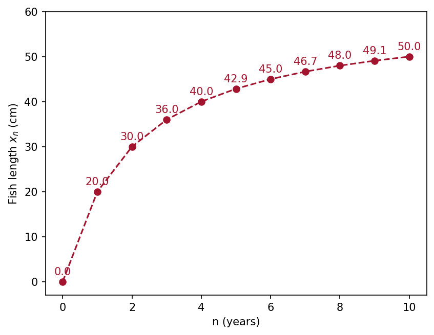
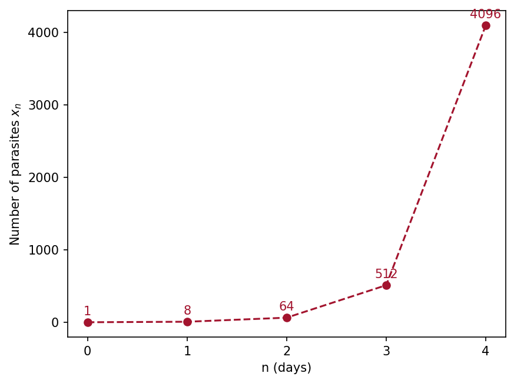
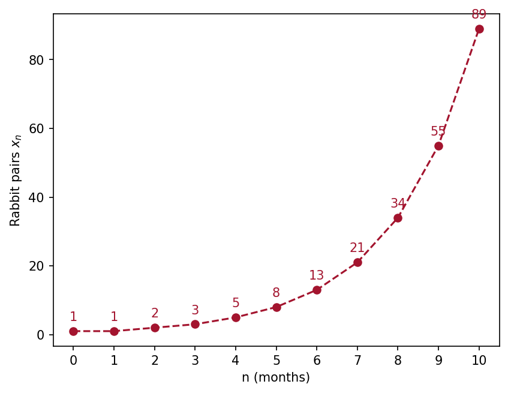
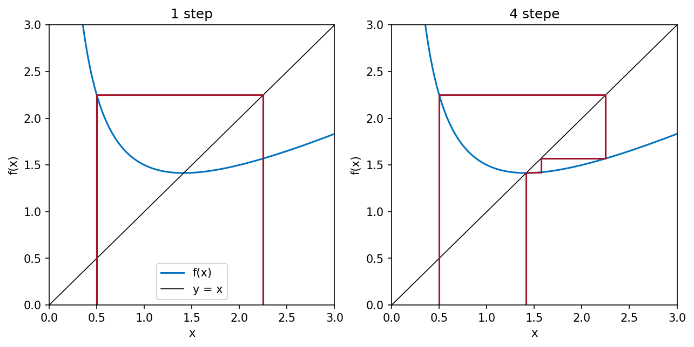

Chapter 1 · Discrete Dynamical Systems with One Variable
1.1Sequences and Difference Equations
Sequences describe quantities observed at fixed time steps: the length of a fish year by year, the number of malaria parasites day by day, pairs of rabbits month by month. A sequence can be given by a formula for the n-th term or by a recursion rule that computes each term from its predecessor.
For each figure of the section you will find the program that produces it. Change parameters and initial values and observe what happens. Figure and equation numbers refer to the book.
Fig. 1.1
Fish length after n years
xn = 60n / (n + 2)
An explicitly given sequence: the program evaluates the formula for n = 0, …, 10. The dashed lines only serve as a visual aid; terms of the sequence exist only for integers n.

# Fig. 1.1: Fish length after n years (book, Section 1.1, Eq. 1.1)
# explicit sequence x_n = 60 n / (n + 2)
# (c) 2026 Philipp Kügler · Program for the book "Dynamical Systems in the Life Sciences" · MIT License (see LICENSE)
using Printf, Plots
n = 0:10 # n = 0, 1, ..., 10
x = 60 .* n ./ (n .+ 2) # formula for the n-th term (elementwise with dot)
println(join([@sprintf("%.1f", v) for v in x], " ")) # 0.0 20.0 30.0 36.0 ...
rot = RGB(0.64, 0.08, 0.18)
p = plot(n, x, ls = :dash, marker = :circle, color = rot, legend = false, ylims = (-3, 60),
xlabel = "n (years)", ylabel = "Fish length x_n (cm)")
annotate!(p, [(n[k], x[k] + 2.5, text(@sprintf("%.1f", x[k]), 8, rot)) for k in eachindex(n)])
display(p)% Fig. 1.1: Fish length after n years (book, Section 1.1, Eq. 1.1)
% explicit sequence x_n = 60 n / (n + 2)
% (c) 2026 Philipp Kügler · Program for the book "Dynamical Systems in the Life Sciences" · MIT License (see LICENSE)
n = 0:10; % n = 0, 1, ..., 10
x = 60 * n ./ (n + 2); % formula for the n-th term (elementwise ./)
fprintf('%.1f ', x); fprintf('\n') % 0.0 20.0 30.0 36.0 40.0 42.9 45.0 ...
rot = [0.64 0.08 0.18];
plot(n, x, 'o--', 'Color', rot, 'MarkerFaceColor', rot); hold on
for k = 1:numel(n)
text(n(k), x(k) + 1.5, sprintf('%.1f', x(k)), 'HorizontalAlignment', 'center', 'Color', rot)
end
hold off
xlabel('n (years)'); ylabel('Fish length x_n (cm)'); ylim([-3 60])# Fig. 1.1: Fish length after n years (book, Section 1.1, Eq. 1.1)
# explicit sequence x_n = 60 n / (n + 2)
# (c) 2026 Philipp Kügler · Program for the book "Dynamical Systems in the Life Sciences" · MIT License (see LICENSE)
import numpy as np
import matplotlib.pyplot as plt
n = np.arange(0, 11) # n = 0, 1, ..., 10
x = 60 * n / (n + 2) # formula for the n-th term
print(" ".join(f"{v:.1f}" for v in x)) # 0.0 20.0 30.0 36.0 40.0 42.9 45.0 ...
plt.plot(n, x, "o--", color=(0.64, 0.08, 0.18))
for k in n:
plt.text(k, x[k] + 1.5, f"{x[k]:.1f}", ha="center", color=(0.64, 0.08, 0.18))
plt.xlabel("n (years)")
plt.ylabel("Fish length $x_n$ (cm)")
plt.ylim(-3, 60)
plt.show()# Fig. 1.1: Fish length after n years (book, Section 1.1, Eq. 1.1)
# explicit sequence x_n = 60 n / (n + 2)
# (c) 2026 Philipp Kügler · Program for the book "Dynamical Systems in the Life Sciences" · MIT License (see LICENSE)
n <- 0:10 # n = 0, 1, ..., 10
x <- 60 * n / (n + 2) # formula for the n-th term (elementwise)
cat(sprintf("%.1f", x), "\n") # 0.0 20.0 30.0 36.0 40.0 42.9 45.0 ...
rot <- rgb(0.64, 0.08, 0.18)
plot(n, x, type = "o", lty = 2, pch = 16, col = rot, ylim = c(-3, 60),
xlab = "n (years)", ylab = "Fish length x_n (cm)")
text(n, x + 2.5, sprintf("%.1f", x), col = rot, cex = 0.8)Output in the command window
0.0 20.0 30.0 36.0 40.0 42.9 45.0 46.7 48.0 49.1 50.0Fig. 1.3
Malaria parasites after n days
xn+1 = 8 xn, x0 = 1
The loop applies the recursion rule four times. The solution formula xn = 8n x0 gives the same numbers without intermediate steps.

# Fig. 1.3: Malaria parasites after n days (book, Section 1.1, Eq. 1.2 and 1.3)
# recursion rule x_{n+1} = 8 x_n, x_0 = 1
# (c) 2026 Philipp Kügler · Program for the book "Dynamical Systems in the Life Sciences" · MIT License (see LICENSE)
using Plots
N = 4 # number of days
x = zeros(Int, N + 1)
x[1] = 1 # initial value x_0 = 1 (Julia counts from 1: x[1] is x_0)
for k in 1:N
x[k + 1] = 8 * x[k] # recursion rule
end
n = 0:N
println(x) # [1, 8, 64, 512, 4096]
println(8 .^ n .* x[1]) # solution formula x_n = 8^n x_0 gives the same
rot = RGB(0.64, 0.08, 0.18)
p = plot(n, x, ls = :dash, marker = :circle, color = rot, legend = false, xticks = n,
xlabel = "n (days)", ylabel = "Number of parasites x_n")
annotate!(p, [(n[k], x[k] + 250, text(string(x[k]), 8, rot)) for k in eachindex(n)])
display(p)% Fig. 1.3: Malaria parasites after n days (book, Section 1.1, Eq. 1.2 and 1.3)
% recursion rule x_{n+1} = 8 x_n, x_0 = 1
% (c) 2026 Philipp Kügler · Program for the book "Dynamical Systems in the Life Sciences" · MIT License (see LICENSE)
N = 4; % number of days
x = zeros(1, N + 1);
x(1) = 1; % initial value x_0 = 1 (MATLAB counts from 1: x(1) is x_0)
for k = 1:N
x(k + 1) = 8 * x(k); % recursion rule
end
n = 0:N;
disp(x) % 1 8 64 512 4096
disp(8.^n * x(1)) % solution formula x_n = 8^n x_0 gives the same
rot = [0.64 0.08 0.18];
plot(n, x, 'o--', 'Color', rot, 'MarkerFaceColor', rot); hold on
for k = 1:numel(n)
text(n(k), x(k) + 100, sprintf('%d', x(k)), 'HorizontalAlignment', 'center', 'Color', rot)
end
hold off
xlabel('n (days)'); ylabel('Number of parasites x_n'); xticks(n)# Fig. 1.3: Malaria parasites after n days (book, Section 1.1, Eq. 1.2 and 1.3)
# recursion rule x_{n+1} = 8 x_n, x_0 = 1
# (c) 2026 Philipp Kügler · Program for the book "Dynamical Systems in the Life Sciences" · MIT License (see LICENSE)
import numpy as np
import matplotlib.pyplot as plt
N = 4 # number of days
x = np.zeros(N + 1)
x[0] = 1 # initial value: one parasite
for n in range(N):
x[n + 1] = 8 * x[n] # recursion rule
n = np.arange(N + 1)
print(x.astype(int)) # [1 8 64 512 4096]
print((8**n * x[0]).astype(int)) # solution formula x_n = 8^n x_0 gives the same
plt.plot(n, x, "o--", color=(0.64, 0.08, 0.18))
for k in n:
plt.text(k, x[k] + 100, f"{x[k]:.0f}", ha="center", color=(0.64, 0.08, 0.18))
plt.xlabel("n (days)")
plt.ylabel("Number of parasites $x_n$")
plt.xticks(n)
plt.show()# Fig. 1.3: Malaria parasites after n days (book, Section 1.1, Eq. 1.2 and 1.3)
# recursion rule x_{n+1} = 8 x_n, x_0 = 1
# (c) 2026 Philipp Kügler · Program for the book "Dynamical Systems in the Life Sciences" · MIT License (see LICENSE)
N <- 4 # number of days
x <- numeric(N + 1)
x[1] <- 1 # initial value x_0 = 1 (R counts from 1: x[1] is x_0)
for (k in 1:N) {
x[k + 1] <- 8 * x[k] # recursion rule
}
n <- 0:N
cat(x, "\n") # 1 8 64 512 4096
cat(8^n * x[1], "\n") # solution formula x_n = 8^n x_0 gives the same
rot <- rgb(0.64, 0.08, 0.18)
plot(n, x, type = "o", lty = 2, pch = 16, col = rot, xaxt = "n", ylim = c(0, 4500),
xlab = "n (days)", ylab = "Number of parasites x_n")
axis(1, at = n)
text(n, x + 250, x, col = rot, cex = 0.8)Output in the command window
[ 1 8 64 512 4096]
[ 1 8 64 512 4096]Fig. 1.4
Fibonacci sequence
xn+1 = xn + xn−1, x0 = x1 = 1
A second-order difference equation with two initial values. The program compares the recursively computed numbers with the solution formula (1.6).

# Fig. 1.4: Fibonacci sequence (book, Section 1.1, Eq. 1.5 and 1.6)
# x_{n+1} = x_n + x_{n-1}, x_0 = x_1 = 1
# (c) 2026 Philipp Kügler · Program for the book "Dynamical Systems in the Life Sciences" · MIT License (see LICENSE)
using Plots
N = 10 # number of months
x = zeros(Int, N + 1)
x[1] = 1; x[2] = 1 # two initial values x_0 and x_1 (Julia counts from 1)
for k in 2:N
x[k + 1] = x[k] + x[k - 1] # recursion rule
end
n = 0:N
phi = (1 + sqrt(5)) / 2; psi = (1 - sqrt(5)) / 2
formel = (phi .^ (n .+ 1) .- psi .^ (n .+ 1)) ./ sqrt(5) # solution formula (Eq. 1.6)
println(x) # [1, 1, 2, 3, 5, 8, 13, 21, 34, 55, 89]
println(round.(Int, formel)) # the solution formula gives the same numbers
rot = RGB(0.64, 0.08, 0.18)
p = plot(n, x, ls = :dash, marker = :circle, color = rot, legend = false, xticks = n,
xlabel = "n (months)", ylabel = "Rabbit pairs x_n")
annotate!(p, [(n[k], x[k] + 4, text(string(x[k]), 8, rot)) for k in eachindex(n)])
display(p)% Fig. 1.4: Fibonacci sequence (book, Section 1.1, Eq. 1.5 and 1.6)
% x_{n+1} = x_n + x_{n-1}, x_0 = x_1 = 1
% (c) 2026 Philipp Kügler · Program for the book "Dynamical Systems in the Life Sciences" · MIT License (see LICENSE)
N = 10; % number of months
x = zeros(1, N + 1);
x(1) = 1; x(2) = 1; % two initial values x_0 and x_1 (MATLAB counts from 1)
for k = 2:N
x(k + 1) = x(k) + x(k - 1); % recursion rule
end
n = 0:N;
phi = (1 + sqrt(5)) / 2; psi = (1 - sqrt(5)) / 2;
formel = (phi.^(n + 1) - psi.^(n + 1)) / sqrt(5); % solution formula (Eq. 1.6)
disp(x) % 1 1 2 3 5 8 13 21 34 55 89
disp(round(formel)) % the solution formula gives the same numbers
rot = [0.64 0.08 0.18];
plot(n, x, 'o--', 'Color', rot, 'MarkerFaceColor', rot); hold on
for k = 1:numel(n)
text(n(k), x(k) + 3, sprintf('%d', x(k)), 'HorizontalAlignment', 'center', 'Color', rot)
end
hold off
xlabel('n (months)'); ylabel('Rabbit pairs x_n'); xticks(n)# Fig. 1.4: Fibonacci sequence (book, Section 1.1, Eq. 1.5 and 1.6)
# x_{n+1} = x_n + x_{n-1}, x_0 = x_1 = 1
# (c) 2026 Philipp Kügler · Program for the book "Dynamical Systems in the Life Sciences" · MIT License (see LICENSE)
import numpy as np
import matplotlib.pyplot as plt
N = 10 # number of months
x = np.zeros(N + 1)
x[0], x[1] = 1, 1 # two initial values (second-order difference equation)
for n in range(1, N):
x[n + 1] = x[n] + x[n - 1] # recursion rule
n = np.arange(N + 1)
phi, psi = (1 + np.sqrt(5)) / 2, (1 - np.sqrt(5)) / 2
formel = (phi**(n + 1) - psi**(n + 1)) / np.sqrt(5) # solution formula (Eq. 1.6)
print(x.astype(int)) # [1 1 2 3 5 8 13 21 34 55 89]
print(np.round(formel).astype(int)) # the solution formula gives the same numbers
plt.plot(n, x, "o--", color=(0.64, 0.08, 0.18))
for k in n:
plt.text(k, x[k] + 3, f"{x[k]:.0f}", ha="center", color=(0.64, 0.08, 0.18))
plt.xlabel("n (months)")
plt.ylabel("Rabbit pairs $x_n$")
plt.xticks(n)
plt.show()# Fig. 1.4: Fibonacci sequence (book, Section 1.1, Eq. 1.5 and 1.6)
# x_{n+1} = x_n + x_{n-1}, x_0 = x_1 = 1
# (c) 2026 Philipp Kügler · Program for the book "Dynamical Systems in the Life Sciences" · MIT License (see LICENSE)
N <- 10 # number of months
x <- numeric(N + 1)
x[1] <- 1; x[2] <- 1 # two initial values x_0 and x_1 (R counts from 1)
for (k in 2:N) {
x[k + 1] <- x[k] + x[k - 1] # recursion rule
}
n <- 0:N
phi <- (1 + sqrt(5)) / 2; psi <- (1 - sqrt(5)) / 2
formel <- (phi^(n + 1) - psi^(n + 1)) / sqrt(5) # solution formula (Eq. 1.6)
cat(x, "\n") # 1 1 2 3 5 8 13 21 34 55 89
cat(round(formel), "\n") # the solution formula gives the same numbers
rot <- rgb(0.64, 0.08, 0.18)
plot(n, x, type = "o", lty = 2, pch = 16, col = rot, xaxt = "n", ylim = c(0, 95),
xlab = "n (months)", ylab = "Rabbit pairs x_n")
axis(1, at = n)
text(n, x + 4, x, col = rot, cex = 0.8)Output in the command window
[ 1 1 2 3 5 8 13 21 34 55 89]
[ 1 1 2 3 5 8 13 21 34 55 89]Fig. 1.7
Update function of Heron's method
f(x) = ½ (x + 2/x)
The graph of the update function shows how the next value x1 = f(x0) = 2.25 arises from x0 = 0.5.

# Fig. 1.7: Update function of Heron's method (book, Section 1.1, Eq. 1.4)
# f(x) = (x + 2/x)/2 and first step x_0 = 0.5 -> x_1 = f(x_0)
# (c) 2026 Philipp Kügler · Program for the book "Dynamical Systems in the Life Sciences" · MIT License (see LICENSE)
using Printf, Plots
f(x) = 0.5 * (x + 2 / x)
x0 = 0.5
x1 = f(x0)
@printf("x_0 = %g, x_1 = f(x_0) = %g\n", x0, x1) # x_1 = 2.25
rot = RGB(0.64, 0.08, 0.18); blau = RGB(0, 0.447, 0.741)
x = range(0.16, 4.3, length = 400)
p = plot(x, f.(x), color = blau, lw = 2, label = "f(x) = (x + 2/x)/2", xlims = (0, 4.3), ylims = (0, 6.5),
xlabel = "x", ylabel = "f(x)")
plot!(p, [x0, x0, 0], [0, x1, x1], ls = :dash, color = rot, label = "") # up to the curve, then to the y-axis
scatter!(p, [x0, 0], [0, x1], color = rot, label = "")
display(p)% Fig. 1.7: Update function of Heron's method (book, Section 1.1, Eq. 1.4)
% f(x) = (x + 2/x)/2 and first step x_0 = 0.5 -> x_1 = f(x_0)
% (c) 2026 Philipp Kügler · Program for the book "Dynamical Systems in the Life Sciences" · MIT License (see LICENSE)
f = @(x) 0.5 * (x + 2 ./ x);
x0 = 0.5;
x1 = f(x0);
fprintf('x_0 = %g, x_1 = f(x_0) = %g\n', x0, x1); % x_1 = 2.25
rot = [0.64 0.08 0.18]; blau = [0 0.447 0.741];
x = linspace(0.16, 4.3, 400);
plot(x, f(x), 'Color', blau); hold on
plot([x0 x0 0], [0 x1 x1], '--', 'Color', rot); % up to the curve, then to the y-axis
plot([x0 0], [0 x1], 'o', 'Color', rot, 'MarkerFaceColor', rot);
hold off
xlim([0 4.3]); ylim([0 6.5]);
xlabel('x'); ylabel('f(x)'); legend('f(x) = (x + 2/x)/2');# Fig. 1.7: Update function of Heron's method (book, Section 1.1, Eq. 1.4)
# f(x) = (x + 2/x)/2 and first step x_0 = 0.5 -> x_1 = f(x_0)
# (c) 2026 Philipp Kügler · Program for the book "Dynamical Systems in the Life Sciences" · MIT License (see LICENSE)
import numpy as np
import matplotlib.pyplot as plt
f = lambda x: 0.5 * (x + 2 / x)
x0 = 0.5
x1 = f(x0)
print(f"x_0 = {x0}, x_1 = f(x_0) = {x1}") # x_1 = 2.25
x = np.linspace(0.16, 4.3, 400)
plt.plot(x, f(x), color=(0, 0.447, 0.741), label="f(x) = (x + 2/x)/2")
plt.plot([x0, x0, 0], [0, x1, x1], "--", color=(0.64, 0.08, 0.18)) # up to the curve, then to the y-axis
plt.plot([x0, 0], [0, x1], "o", color=(0.64, 0.08, 0.18))
plt.xlim(0, 4.3); plt.ylim(0, 6.5)
plt.xlabel("x"); plt.ylabel("f(x)"); plt.legend()
plt.show()# Fig. 1.7: Update function of Heron's method (book, Section 1.1, Eq. 1.4)
# f(x) = (x + 2/x)/2 and first step x_0 = 0.5 -> x_1 = f(x_0)
# (c) 2026 Philipp Kügler · Program for the book "Dynamical Systems in the Life Sciences" · MIT License (see LICENSE)
f <- function(x) 0.5 * (x + 2 / x)
x0 <- 0.5
x1 <- f(x0)
cat(sprintf("x_0 = %g, x_1 = f(x_0) = %g\n", x0, x1)) # x_1 = 2.25
rot <- rgb(0.64, 0.08, 0.18); blau <- rgb(0, 0.447, 0.741)
x <- seq(0.16, 4.3, length.out = 400)
plot(x, f(x), type = "l", col = blau, lwd = 2, xlim = c(0, 4.3), ylim = c(0, 6.5), xlab = "x", ylab = "f(x)")
lines(c(x0, x0, 0), c(0, x1, x1), lty = 2, col = rot) # up to the curve, then to the y-axis
points(c(x0, 0), c(0, x1), pch = 16, col = rot)
legend("topright", legend = "f(x) = (x + 2/x)/2", col = blau, lwd = 2)Output in the command window
x_0 = 0.5, x_1 = f(x_0) = 2.25Fig. 1.8
Staircase diagram of Heron's method
xn+1 = ½ (xn + 2/xn), x0 = 0.5
Via the diagonal y = x, each new value becomes the starting point of the next step. The staircase runs into the intersection at √2; already x4 is correct to four decimal places.

# Fig. 1.8: Staircase diagram of Heron's method (book, Section 1.1, Eq. 1.4)
# x_{n+1} = (x_n + 2/x_n)/2 with x_0 = 0.5; the staircase runs into the intersection with y = x at sqrt(2)
# (c) 2026 Philipp Kügler · Program for the book "Dynamical Systems in the Life Sciences" · MIT License (see LICENSE)
using Printf, Plots
f(x) = 0.5 * (x + 2 / x)
x0 = 0.5; N = 4
x = zeros(N + 1)
x[1] = x0 # Julia counts from 1: x[1] is x_0
for k in 1:N
x[k + 1] = f(x[k])
end
for k in 1:N + 1
@printf("x_%d = %.6f\n", k - 1, x[k])
end
@printf("sqrt(2) = %.6f\n", sqrt(2))
rot = RGB(0.64, 0.08, 0.18); blau = RGB(0, 0.447, 0.741)
xx = range(0.3, 3, length = 400)
bilder = []
for s in (1, N)
p = plot(xx, f.(xx), color = blau, lw = 2, legend = false, xlims = (0, 3), ylims = (0, 3),
xlabel = "x", ylabel = "f(x)", title = "$s step(s)")
plot!(p, [0, 3], [0, 3], color = :black)
px = [x[1]]; py = [0.0] # staircase: vertically to the graph, horizontally to the diagonal
for k in 1:s
append!(px, [x[k], x[k + 1]]); append!(py, [x[k + 1], x[k + 1]])
end
push!(px, x[s + 1]); push!(py, 0.0) # value back to the x-axis
plot!(p, px, py, color = rot)
push!(bilder, p)
end
display(plot(bilder..., layout = (1, 2), size = (900, 420)))% Fig. 1.8: Staircase diagram of Heron's method (book, Section 1.1, Eq. 1.4)
% x_{n+1} = (x_n + 2/x_n)/2 with x_0 = 0.5; the staircase runs into the intersection with y = x at sqrt(2)
% (c) 2026 Philipp Kügler · Program for the book "Dynamical Systems in the Life Sciences" · MIT License (see LICENSE)
f = @(x) 0.5 * (x + 2 ./ x);
x0 = 0.5; N = 4;
x = zeros(1, N + 1);
x(1) = x0; % MATLAB counts from 1: x(1) is x_0
for k = 1:N
x(k + 1) = f(x(k));
end
for k = 1:N + 1
fprintf('x_%d = %.6f\n', k - 1, x(k));
end
fprintf('sqrt(2) = %.6f\n', sqrt(2));
rot = [0.64 0.08 0.18]; blau = [0 0.447 0.741];
xx = linspace(0.3, 3, 400);
schrittzahl = [1 N];
for p = 1:2
subplot(1, 2, p);
plot(xx, f(xx), 'Color', blau); hold on
plot([0 3], [0 3], 'k-');
s = schrittzahl(p);
px = x(1); py = 0; % staircase: vertically to the graph, horizontally to the diagonal
for k = 1:s
px = [px x(k) x(k + 1)]; py = [py x(k + 1) x(k + 1)];
end
px = [px x(s + 1)]; py = [py 0]; % value back to the x-axis
plot(px, py, 'Color', rot);
hold off
axis([0 3 0 3]); xlabel('x'); ylabel('f(x)');
title(sprintf('%d step(s)', s));
end# Fig. 1.8: Staircase diagram of Heron's method (book, Section 1.1, Eq. 1.4)
# x_{n+1} = (x_n + 2/x_n)/2 with x_0 = 0.5; the staircase runs into the intersection with y = x at sqrt(2)
# (c) 2026 Philipp Kügler · Program for the book "Dynamical Systems in the Life Sciences" · MIT License (see LICENSE)
import numpy as np
import matplotlib.pyplot as plt
f = lambda x: 0.5 * (x + 2 / x)
x0, N = 0.5, 4
x = [x0]
for n in range(N):
x.append(f(x[-1]))
for n, v in enumerate(x):
print(f"x_{n} = {v:.6f}")
print(f"sqrt(2) = {np.sqrt(2):.6f}")
xx = np.linspace(0.3, 3, 400)
fig, axs = plt.subplots(1, 2, figsize=(10, 4.5))
for ax, schritte in zip(axs, (1, N)):
ax.plot(xx, f(xx), color=(0, 0.447, 0.741), label="f(x)")
ax.plot([0, 3], [0, 3], "k", lw=0.8, label="y = x")
px, py = [x[0]], [0] # staircase: vertically to the graph, horizontally to the diagonal
for k in range(schritte):
px += [x[k], x[k + 1]]
py += [x[k + 1], x[k + 1]]
px.append(x[schritte]); py.append(0) # value back to the x-axis
ax.plot(px, py, color=(0.64, 0.08, 0.18))
ax.set_xlim(0, 3); ax.set_ylim(0, 3)
ax.set_xlabel("x"); ax.set_ylabel("f(x)")
ax.set_title(f"{schritte} step" + ("e" if schritte > 1 else ""))
axs[0].legend()
plt.show()# Fig. 1.8: Staircase diagram of Heron's method (book, Section 1.1, Eq. 1.4)
# x_{n+1} = (x_n + 2/x_n)/2 with x_0 = 0.5; the staircase runs into the intersection with y = x at sqrt(2)
# (c) 2026 Philipp Kügler · Program for the book "Dynamical Systems in the Life Sciences" · MIT License (see LICENSE)
f <- function(x) 0.5 * (x + 2 / x)
x0 <- 0.5; N <- 4
x <- numeric(N + 1)
x[1] <- x0 # R counts from 1: x[1] is x_0
for (k in 1:N) x[k + 1] <- f(x[k])
for (k in 1:(N + 1)) cat(sprintf("x_%d = %.6f\n", k - 1, x[k]))
cat(sprintf("sqrt(2) = %.6f\n", sqrt(2)))
rot <- rgb(0.64, 0.08, 0.18); blau <- rgb(0, 0.447, 0.741)
xx <- seq(0.3, 3, length.out = 400)
par(mfrow = c(1, 2))
for (s in c(1, N)) {
plot(xx, f(xx), type = "l", col = blau, lwd = 2, xlim = c(0, 3), ylim = c(0, 3),
xlab = "x", ylab = "f(x)", main = sprintf("%d step(s)", s))
abline(0, 1)
px <- x[1]; py <- 0 # staircase: vertically to the graph, horizontally to the diagonal
for (k in 1:s) { px <- c(px, x[k], x[k + 1]); py <- c(py, x[k + 1], x[k + 1]) }
px <- c(px, x[s + 1]); py <- c(py, 0) # value back to the x-axis
lines(px, py, col = rot)
}Output in the command window
x_0 = 0.500000
x_1 = 2.250000
x_2 = 1.569444
x_3 = 1.421890
x_4 = 1.414234
sqrt(2) = 1.414214Try it in the browser · no installation
Staircase diagram of Heron's method
Choose the initial value x0 and the number c whose square root is sought. The staircase always runs toward √c, no matter where it starts (for x0 > 0).
MATLAB apps from the course
Download, put into a folder, and type the name without extension in MATLAB, e.g. fisch_app. The apps use the graphical user interface of MATLAB and do not run in GNU Octave. Their user interface is in German.
- fisch_app.mGrowth of a fish
- malaria_app.mMalaria parasites
- fibonacci_app.mFibonacci sequence with rabbit picture (with 6 image files in the same folder: fibonacci_hasen_0.png, fibonacci_hasen_1.png, fibonacci_hasen_2.png, fibonacci_hasen_3.png, fibonacci_hasen_4.png, fibonacci_hasen_5.png)
- aktualisierung_app.mUpdate function and one iteration step